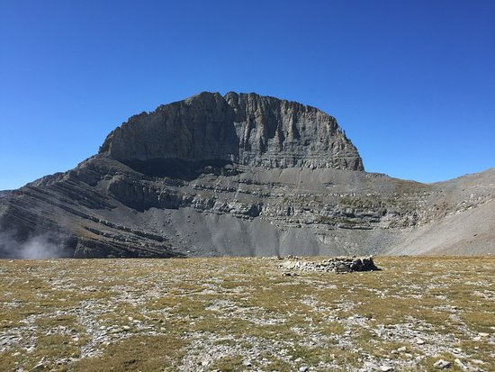

The ancient Greeks were polytheistic and believed in many gods that they used to explain many phenomena such as weather, harvest, among others. They believed that the home of the gods was located at the peak of Mount Olympus and the site of the Throne of Zeus.
The greek gods that lived on Mount Olympus were known as the Olympian gods and were considered the most powerful of the Greek gods. These included:
- Zeus, god of the sky and thunder
- Poseidon god the sea, horses and earthquakes
- Hera goddess of marriage, women and family
- Demeter goddess of argriculture
- Aphrodite goddess of love and beauty
- Athena goddess of reason, wisdom and war
- Artemis goddess of the hunt
- Apollo god of the sun, archery and prophecy
- Ares god of war
- Hephaestus god of fire, forges and blacksmiths
- Hermes god of merchants, theives and travelers
- Dionysus god of wine and pleasure


The video below further explains the Greek gods and Mount Olympus